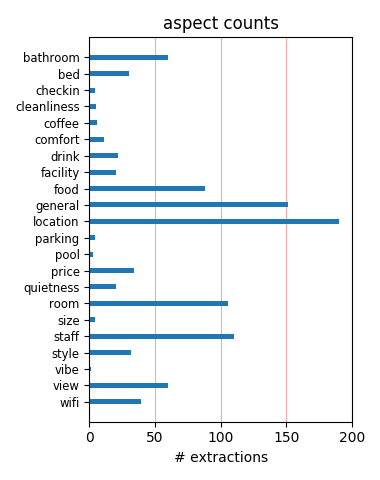
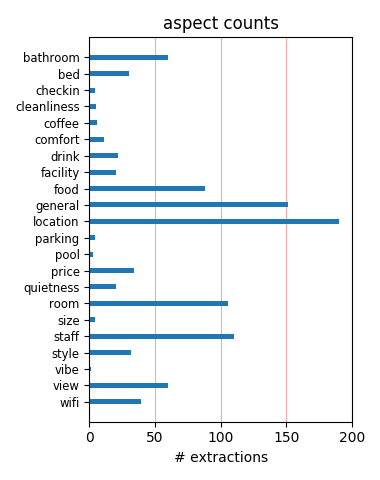

Great hotel directly on the square north of the old town, although surrounding by tourist stores (e.g. ice cream store). Once inside, it had an excellent atmosphere, clean (if exceedingly modern) rooms, and great views. Highly recommended when in Barcelona
We stayed here pre-cruise this summer. The hotel has a lovely garden where we ate our buffet breakfast and a nice little lobby. The rooms are modern and spacious and very clean! The hotel is centrally located in the heart of Las Ramblas which is why we chose it.
We've stayed here last weekend. Very modern hotel. Clean, good service, very nice rainshower, great room, good selectio of breakfast. Location is also great, touristic hop on/off bus close to the hotel. Nice walk from the hotel to the harbour. Recommend this hotel!
At first we were surprised it was no smoking and the television channel numbers were not that much for that hotels categorie. we never saw such an amazing bath room with that special shower and toilet combinaison and the staf team was very kindfull. very good experience ! R&D
Excellent location, very good service & excellent facilities. We stayed for 4 nigths. Near Hard Rock Cafe. The only minor issue was that we heard the people in the room next door, that was sometimes annoying. However, oveall a great stay and a great hotel with really helpful staff.
There was such a tiny room, and not what I reservered, and they never changed the linens once. the bathroom was dirty, and the service was horrible. ANoisy and mean spirited front desk. I am telling all my friends to avoid this one. Location is great. But way overpriced for the dirt and noise.
I stayed here in feb this year and i could have wish for a better hotel! Before here i was in manchester in the hilton and this hotel was better! If or when i go back to barcelona i would go back here, the location is amazing, you are so close to everywhere that you need to be. Good work hotel managers!
We enjoyed our stay at the Olivia Plaza. Location is ideal and the rooms were fairly quiet. Very clean with lots of places to store your belongings made it easy to keep uncluttered. The restaurant was overpriced, but high quality. Service in the hotel and restaurant was excellent. Overall, very good value for the money and would recommend.
This was our first trip to Spain, and the Olivia Plaza was a wonderful first experience! Beautiful, clean, contemporary retreat from the bustling city for my husband and I. Our room overlooked the Playa de Catalunya, which I would recommend requesting. We were steps from Las Ramblas and wonderful shopping and restaurants. I totally recommend it!
i do recommand this hotel to everybody who wants to spend just a few days and live just in the very centre of Barcelona. from here you can reach all the most important sights by foot. the hotel is quiet new, modern and very nice furnished....it is clean, the service is good and although you are in the very centre, it is a very quiet hotel and you sleep very well.
The Olivia Plaza hotel is in an excellent location on Plaza Cataluyna (just off La Rambla) and the rooms are very quiet, clean, spacious and we loved the black out blinds! We took a twin bedded room and the beds are very comfortable and the shower is really good. Staff are very helpful. Overall would recommend to anyone and we would stay there again without a doubt.
This is a very clean and modern hotel set in the most central spot of Barcelona. The rooms are open plan and uncluttered and very quiet. For two people the closet space was limited and the bathroom almost a little too open plan! But enjoyed the very quiet back terrace away from the noise and chaos of the city. Access to the airport bus, metro and attractions excellent.
My boyfriend and I went to Barcelona for a long weekend and booked the Olivia Plaza. Amazing location, the hotel is close to everything and right in the main square. We were on the 7th floor and we heard no sound. The tour bus has 2 stops just outside the hotel. The rooms were modern, funky and clean and the staff were really friendly. I would definitely recommend. *****
Just returned from a long weekend at the Olivia Plaza Hotel, my wife and I had a great time in Barcelona. The hotel was immaculate very clean and tidy and the staff were exceptionally helpful. The location could not be better for easy access to the Gothic quarter, easy transfer from the Airport by the Aerobus (almost right outside the hotel. I would highly recommend this hotel.
Overall an excellent stay, staff friendly and pleasant, location absolutely spot on for attractions and transport. The hotel was very clean and modern, can't say the sliding glass frosted doors to the toilet and shower were my style but this is a tast e thing only and a very minor point. Only had a short stay so did not try the hotel food. I would definitely stay at the Olivia Plaza again.
It is right in the center, where someone can shop and drop off what they bought at the hotel if things got heavy! Right next to the La Rambla famous street. Metro, bus station, malls, shops, restaurants, pharmacies, sightseeing tours are all accessible as in 100 meters away! The hotel itself is very stylish, free internet. Clean bathrooms. Good service. The breakfast area is just so relaxing.
Had a great stay here for christmas with the family. Central location, modern justified 4 star hotel, friendly staff. Our room was large and comfortable with a great view and no issues with noise despite the very central location. Buffet breakfast was varied and good. Overall we thought very good value for money and would definetely consider staying here again on a next trip to wonderful Barcelona.
Dont stay anywhere else. Pros: right in the middle of Plaza Catalunya-- a huge hub of action--food-- people--shopping. 2 minute walk to the Ramblas-- close to the best shopping areas in town, markets, restaurants. Close to subways that go to the beach or other parts of town. Everything is walkable. The hotel itself is ultra-modern but not obnoxious. Rooms are clean with great views of the city. Enjoy!
I had a trip planned with a stay at the Olivia Plaza Hotel (Superior Room) in Barcelona Spain in September 2011. I had emergency surgery on August 28, 2011. I contacted the hotel to let them know what had happened and asked for a refund of my $600+ dollars. To date they not even responded to my request. I understand that this is a very nice hotel. It is sad they treat people the way they do! My bad luck!
We just stayed at the Olivia hotel for 2 nights. The room we were in was beautiful, as it had a panoramic view of Placa Catalunya. The hotel is in a very central location. Metro is just a few seconds away from the hotel, and it is surrounded by numerous shops and cafes. La Ramblas is just round the corner. Excellent Hotel and highly recommended. The breakfast is a little expensive, but cafeteria is just outside the hotel.
This hotel is chic without being stuffy... spacious and well appointed.... and in the very best spot one could hope for in the old city section of Barcelona. Minutes from the cruise docks and steps away from the activities of La Ramblas and if you pre-book, it's an excellent value for the caliber of hotel. The staff was welcoming and helpful, the rooms are spectacular and the food in the restaurant excellent despite having a limited menu.
The hotel is a couple doors away from the Hard Rock Cafe and faces Placa de Catalunya (City Center). The Aerobus from the airport drops you off just around the corner. The location was very convenient and a short walk to La Rambla and exploring the many interesting streets of the Barri Gotic. The hotel staff was friendly and helpful. The breakfast was delicious. The view of Placa de Catalunya from our balcony was definitely a highlight of our trip.
The Hotel is new and nice..The thing is that I was in Barcelona for business and had to sleep early and get up early..The front rooms with the Plaza Catalunya view is very noisy till very late hours,that is why I had to change my room and the breakfast was not "100% ready" when I was there at 7 am even if it says "the breakfast starts at 7 am",I had to wait for the plates to arrive etc..Its location is perfect both for shopping and sightseeing activities..
The hotel is in great location. We caught bus from the airport and only a short walk to the hotel. The hotel is located in the centre where you can visit plenty of restaurants. The hotel is nice and cosy. But the rolling blind wasnt working hence we were woken up very early in the morning. The sewage system must be failing, as our room was okay on the first night but not for subsequent nights. The lady down in the bar is very helpful. The concierge is great!!
We visited the hotel in the beginning of August. We used the Aerobus that takes you directly outside the hotel. We arrived at 12:00 at noon ant the Receptionist kindly asked as if we can wait until 15:00 to give as our room. It worth the delay since the room was great on the 10th floor with a great view. The only bad thing was that it was not 100% clean but still it was nice. The breakfast is also great and of good quality. The Wifi was good but not constant.
As everyone says this is a wonderful central location and the rooms are very modern and functional. (We did have a bit of a problem with water running under the shower door if it was on for too long.) We had a room on a lower floor (we had asked for an upper floor but the hotel was full due to conventions) and really weren't bothered by street noise. The breakfasts were excellent and we ate there two times since they seemed a great value despite the high price.
1) They charged my card 984Euros even 2 weeks after I emailed to cancel. - They were supposed to charge after the stay and no charges were supposed to be made if you cancel more than 24 hours before check-in. - I cancelled 3 weeks before check-in. Moreover, when I logged in to their website to check and my reservation was not there. 2) The telephone number on their website is invalid (fake?). Have emailed them to reverse charges - will update this thread when/if I hear from them.
I stayed at the Olivia Plaza as part of a Hen weekend and was extremely pleased with the Hen's choice. It was a very clean, modern hotel which is perfectly positioned in the centre of Barcelona and within walking distance to the main tourist areas and shops. The only negative we found was the cost for breakfast which was over 20 euros a person - too much in our opinion. Having said that Barcelona isn't a cheap city to visit. Make sure you take plenty of euros with you - you'll need it.
The airport bus leaves you off just on the other side of Placa Catalunya. Couldn't be any more centrally located. The hop-on-bus for tourism is just across the street and Las Ramblas is just around the corner. The room is modern and minimalist. The door to the shower slides sideways and is also the door for the separate toilet. There is a glass panel on the side of the shower that lets too much light into the bedroom area from the sink area. I would certainly stay here again if returning to Barcelona.
Very pleasant two-nights stay - particularly that we received an upgrade to a suite. Only things to criticise were: a) The suite was serviced late in the morning ... it was not cleaned before about two o'clock in the afternoon on the second day. b) The toilet does not contain a 'bidet'. However, these are very small inconveniences when balanced against the major conveniences like 'location', 'friendliness of staff'', and the general atmosphere of being 'at home'. We will certainly stay there again when next in Barcelona.
It was the second time I visited the hotel and I must say it is a pleasure to be there. Right in the middle of everything, complete luxury and nice staff. There are only two things I would like to mention that surprised me a bit: - we had a room with two single beds - we did not ask for it and preferred a double. We did not ask for a roomchange, so I don't know if that could have solved the problem easily. - we did not receive new soap and shampoo. Not necessary every day, but after the second day it would have been nice.
The hotel could not be located better. It is right on the main piazza, where you have access to metro, buses, organized trip buses pick you up in front of the hotel. It's about 50 m from the Las Ramblas the main touristic street. The hotel was great, gave us an upgrade on our arrival just like that without questions asked. Room was specious and clean. The only downfall was a little noise coming from the street but it was bearable, and maybe the wireless internet was not grate. Fantastic breakfast, great selection of pastries.
I've just come back from the Plaza after having stayed in Barcelona for 2 days. I like the overall look of the hotel and its fun features, but most of the reviews are correct.....it is very noisy and you really must know and love the person who you stay with as there is no privacy with the bathroom setup. There is no turn down serivce which you would expect in a 4* hotel but the beds are fab! Beware of the metro as my husband had his wallet stollen after having been in the city for about an hour. The hotel staff and the police were very helpful.
A modern, stylish hotel right in Cataluna Square, so you couldn't really be better located in central Barcelona. Given the location, it was very quiet, though we had a room at the back. From the Concierge onwards the staff were very professional and helpful too. Very little to fault, the only mishap was ordering breakfast in the room for Monday morning, which didn't turn up. They were most apologetic, however. Perhaps the room was a little small, but they it was decorated with simple, stylish elegance that made the room a pleasure to return to. Recommended.
Olivia Plaza was very central and the perfect walking distance from every where in barcelona central. The tour bus service across the road was great and there were some lovely cafes near where you could relax in the evenings and watch the world go by. The restaurant in the hotel was impressive and the seating out the back with the glass floors and contemporary design was very interesting and a conversation piece. The hotel staff were extremely accomodating and friendly which is always a plus in any hotel. We loved the fresh feel of the design in the hotel and the clean appearance.
We booked our holiday package to Barcelona through lastminute.com and the hotel was great... until I got my credit card bill this month. Our whole trip was prepaid through lastminute.com. When we checked in to the Hotel Olivia they took my credit card for any room service charges and said nothing would be charged to it. We even paid for our room service by cash when we left. So a month later I get my credit card statement and there is a $447 (!!) charge from Hotel Olivia. No warnings, no calls, no letters. Now I'm worried who else has my credit card details from that little transaction!
Olivia Plaza is a very nice design hotel with a perfect location: right on Plaça de Catalunya. We were upgraded to a suite and it was beautiful, clean and cool. The only downside is the noice from the street. The first night there was some kind of party going on. This made no difference to us, since we have no problem falling asleep but others might have a problem with it. The breakfast buffet was also very good. With a selection of different Spanish ham, cheese and sausages, it almost felt like a tapas buffet. We paid 200 Euros per night and got good value for our money. We will definitely stay at this hotel again!
I do not have one bad word to say about this hotel. The location, the staff & service, the cool design, the fantastic view, the comfy beds. Everything was on the spot! We were celebrating our 6th aniversary and had cava and strawberries waiting for us in our room. The view was breathtaking and - staying in room 1008 - we were one door away from the roof terrace, which we had pretty much to ourselves. The heated outdoor bar downstairs with glass floor was very chic and great for pre- og post dinner drinks. We will definitely stay here the next time we go to Barcelona. Thank you for making our anniversary weekend even more perfect!
This hotel is centrally located - just off the Ramblas (even though other hotels say they are, this one really is!) and nearby all the shops, local attractions and opposite the bus garage so really well located. The staff were really friendly, and given we stayed in high season, still made us feel really special and important. The roof terrace outside is beautiful - were were allowed to bring our own alcohol - none of the "you have to buy from the hotel bar" nonsense. The rooms were very clean and comfortable - bathrooms spotless. We thought this was really good value for money given we could walk almost everywhere in no time at all!
Having travelled to numerous European "hot spots", we have become quity picky about where we stay! This hotel is very convenient and rooms quite large (for europe standards). As we've found most hotel beds in Europe to be quite firm...we were pleased to find this hotel's bed was quite comfy (not soft...but not rock hard either). Plus: Size of room and location Negatives: No real privacy for the bathrooms, price of room, and lack of wi-fi internet. Yes, the hotel says it has wi-fi but you have to "sign up" for it and then you only get like an hour or so...when we used one of the two computers available to guests - the computers repeatedly froze.
We stayed at the Olivia Plaza for three nights to celebrate my husband and a friend's joint birthday. The hotel has an excellent location overlooking Place de Catalonia at the top of La Rambla and steps away from the airport bus stop. We were upgraded to a superior room(a lovely surprise) and the room was spacious, had lovely views of the square and, we thought, was beautifully decorated. The rooms are immaculately clean and the staff are really friendly and polite. We had breakfast on two of the three days we stayed which was okay .. not worth the price charged 22 euro(?) each. I would definitely recommend this hotel for convenience and style.
Close but not right on top of the noisey Las Ramblas, everything is right here. Safe contemporary hotel with an interesting, charming twist of the 16th Century church walls exposed and abutting the restaurant and courtyard. Terrace Rooms (only 4) are worth the price they overlook the square and with the table and chairs it is nice additional living/dining space. Only complaint, for which hotel has no control, is the collective group of Algerian women begging along the sidewalk (think SlumDog!). On the street watch your bags & pockets...gypies, tramps & thieves! Tour bus has 3 routes - we did a 2 day pass and it was well worth it - being able to hop on/off.
This is my fourth stay at Olivia Plaza. The hotel is ideally located in the very central Plaza de Catalunya and is superbly comfortable and modern. The outside courtyard is the perfect place to enjoy a quiet breakfast or an early evening aperitif. However, a note to the hotel, i thoguth that service has significantly deteriorated from previous stays and needs to be addressed immediately to maintian the exccellent rating. Front of house staff were helpful but unenthusiastic and service staff virtually non-existent. A number of times I had to go inside the hotel to find staff to get service. Other than that, highly recomend this hotel and would return again.
Great hotel and location with easy access to the aerobus, city tour bus (a must) and all the other Barcelona attractions. We found everything clean and the WiFi worked well in the room. Breafast a treat and served at decent times (until 11am weekdays and 11:30am at weekends). As it was very central we thought it may be busy and noisey but NO, there was always staff on hand and they were extremely competent. Rooms nice size and well designed for a couple like us but not sure whether the bathroom design woud be family friendly. The only downside was the lack of pool and distance to the beach if you would like relax close to the water but still a lovely hotel.
A late review, but I have just booked to go back in June and wanted to leave my comments! Really lovely hotel, brill location and really really good staff. We travelling to Barcelona for my boyfriend's 21st birthday in May and I had called ahead to arrange for us to have a nice room and also if they could help with arranging for some balloons to be put in our room for when we arrived. I expected a few balloons, when we arrived there were around 10 hellium 21st balloons dotted around the room - fab. Hotel staff were very helpful. Rooms sound proof, very pretty bar courtyard. Always very clean. Overall a brill stay and will now stay every time we travel to barcelona.
great hotel ecellent location. in plaza catalonia middle of barcelona. the rambale is just outside to the left of the hotel. al the tourist attraction in near by walking. if you want a bus many bus line is passing in front of the hotel also metro sation. the AREO BUS that connect the city to the airport is 100 meter/ the city tour bus also next 50 meter were you can take the on/off tour bus. 2 lines blue and red. the front desk was very helpful about tourist information. we stay in room 408 face the plaza but no noise. nice wiew of the plaza big windows. the breakfast was good keep us most of rhe day. ill recommend it to my friends and if im back ill book there egain
I loved this hotel. My room was very large, and very quiet. Not an easy thing to get right in Plaza Catalunya. The location is perfect to drop your bags during the day and to get anywhere on foot is quite easy and safe. They offer free Internet which is a bonus those days, and my rate with breakfast was reasonable for this city. The room was spotless with comfortable crisp linens and a wonderful design element. Mostly it was the location that I loved best. The staff were very pleasant and helped to recommend very good restaurants and shopping areas which I had not been to. All in all I loved this place and would stay here again and again. Food at the hotel is also quite good.
I arrived to Barcelona and I luckily went to Olivia Plaza in the afternoon with a last minute change of plans, nevertheless the staff at the reception was most understanding and helpful as I didn't have any prior booking. I was offered a really nice room which was comparatively less expensive than other similarly rated hotels in Barcelona. The service staff was very amiable, quick and professional; on the other hand the room was very clean and comfortable. The hotel is in the middle of the famous Plaza Catalunya, and is right next to La Rambla and the Gothic area which are a must see in Barcelona. I had a great stay in Olivia Plaza and would definitely recommend it to all ages!!
Olivia Plaza is right at the center of the city, Plaza Catalunya. It is adjacent to an old church which makes it something special. Modern design, nice service. We took advantage of the "free breakfast" option provided by tripadvisor. The breakfast buffet was rich and satisfying. Level A is for free internet. Moreover, there are nice art magazines for those interested (I enjoyed them). We had supper one night in the Hotel's restaurant. The service was nice and the price was OK. Take the elevator to the 10th floor for a nice view of the city. The only negative issue was that I could not get a 110 V to 220 V adapter (flat to round jack) for 2 days and could not charge my camera battery.
Don't expect huge rooms unless you're booking their suites. The standard rooms are small but fantastically designed to make good use of space. The best feature of this hotel is, without a doubt, the shower. They are monsoon style and simply wonderful. The bar downstairs is useful as it's open late, staffed by a friendly team and usually quiet in the evenings. The hotel location is ideal for checking out Barcelona -- it's right on Plaza Cataluna and about 100 paces from the top of Las Ramblas and the underground. The internet has always been a problem. Some rooms have excellent WiFi reception, others not. So be explicit with the team when you check-in if you're needing a decent connection.
Hotel is in a suberb location with the stop for the airbus almost right outside and the journey from the airport taking only about 20 minutes. The staff were all very helpful and friendly and the rooms were amazing - furnished to the highest spec. and spotlessly clean. The main stop for the tour bus, again, is only about a 2 minute walk from the hotel entrance. - This hotel is perfect for the Barcelona first timer as everything is on your doorstep and as it couldn't be more central it makes it extremely easy to navigate around the city. The lobby and bar area are very slick and modern - all in all it's the best hotel I've ever stayed in and will definately be coming back for years to come!
We spent 3 nights at the Olivia Plaza. This hotel is a little outside the square with ultra modern rooms and brave colour schemes. Its location is brilliant, being in the Plaza Catalunya next door to the Hard Rock Café and a few steps away from lots of shops and La Rambla. The place was buzzing. Our room was comfortable but odd, being situated in the centre of the hotel with no natural light. The glass door in place of a window opened on to a corridor so we had to keep the curtain closed for privacy. Nor were we keen on the open plan bathroom right next to the door. They were the only things that let the hotel down. That aside, it was a great place to stay and the staff were very friendly and helpful.
Olivia Plaza is a lovely modern hotel in an excellent central location. The location does not get much better with great views (we had a room on the 10th floor overlooking Catalunya square) & easy access to public transport (the airport bus, underground & city sightseeing buses stopped across the square). Barcelona is a great city for sight seeing with plenty to see & do with lots of good places to eat, drink & shop. As in any city eating & drinking within the main tourist trap areas ie the Ramblas can be pricey but we found plenty of places just off the main areas which served good quality food at sensible prices. Would fully recommend the Olivia Plaza as a good clean modern base to stay in Barcelona.
Location is great. It is situation right on Catalunya Square in the heart of Barcelona. This is where the tour buses for Monserrat etc depart from. The rooms are clean and nice. Staff is friendly and helpful and speak English. Restaurant food (esp. dinner) is fabulous. We had a flood in our room, the shower upstairs leaked into our bathroom. Front desk staff moved us immediately to a beautiful suite. They handled the situation very well. Only complaint is that the rooms facing towards the inner courtyard can be very noisey. Although we were on the sixth floor we could hear conversations in the dining/bar area until 2 am. Then at 5:30 am the hotel restaurant staff started their shifts and were very noisey.
The hotel is very conveniently located at Plaza Catalunya and within walking distance to Las Ramblas, Museu Picasso, Barri Gotic and the high end Eixample district. The staff is very friendly and always greet me with a smile. I was given a room on the 7th floor overlooking Plaza Catalunya and so had a great view. The double room comes with a huge bed with comfortable bedding. There is a cafe immediately next to the hotel so it comes in handy for a quick charge of caffeine. The Carrefour Supermarket is about 10 minutes walk from the hotel. The layout of the bathroom is very open, and one needs to strip in the room before getting in the shower stall. No problem if travelling as a couple but may be inconvenient for a family or friends.
We stayed in the Olivia Plaza hotel for 5days at the end of July 2007 and i could not say enough about how terrific our stay was. If you like ultra modern, chic and minimalistic then this is the hotel for you. It has a superb location and one literally steps off the plane onto a bus and is dropped directly across the road. All staff are courteous and friendly and could honestly not do enough for us. Due to a maintenance problem we were upgraded to room 906 (penthouse- own terrace, jacuzzi and complimentary champers) We were delighted. They put on a great spread for breakfast that caters for everyones taste...and the margarita's in the evening are to die for. As they say..location location location....We will be staying here again....
We have stayed at this hotel between 13-18 Nov 2011 and I have to say it was a great choice :) We stayed in room 408 on the forth floor with a georgeous view ti Catalunya Plaza. I cant say a bad word about this hotel! The location is perfect, and hotel is very sound proof which makes it perfect to stay wit a toddler- feels like you are the only guest in this hotel :) Rooms were spotless, same with bathrooms and toilets. Bed was huge and the baby cot was provided, nice and colorful which our daughter loved. Staff, always ready to help, proviede everything we needed. Didnt use the hotel restaurant, so cant tell anything about the food, but it did look like they have a great variety. I am happy to answer any questions if anyone needs an advice :)
We just returned from 2 nights at the Olivia Palace. The location was great for the metro buses, shopping and general sightseeing. A large number of rooms ( from 11 to 14 on each floor) look out over the inner courtyard which is contained under a glass roof, with the bar and reception being on the lower floor. These standard rooms had no access to fresh air, when opening the windows and the nosie from below would echo. The A/C was very good and quite. Our room (14) had a small window and looked out on to a corridor and there was very little natural light. There is a roof terrace giving a good view of the city. Breakfast was expensive at €20 per head, there is a cafe at the front of the hotel selling coffee and pastries. Free internet available too.
I recently planned a business visit to Barcelona for about 22 people. We needed a hotel that would work with a group, had English-speaking staff, was close to public transportation, and in the proximity of good restaurants for dinner. We found all that and much more at Olivia Plaza. Olalla, the Events Manager, and her colleagues made the experience unforgettable. We enjoyed the modern and spacious rooms, but it was the friendly and accommodating staff that made our stay so enjoyable. Olalla, in particular, went above and beyond to accommodate all of our needs and to handle every detail in the most friendly and professional manner. I plan visits like this in different countries every year. This was the best hotel experience we have had on any of our visits. We will be back!
I stayed here with my wife and two children ( 3 years and 11 months old). I booked a suite and stayed for 4 nights. The hotel location is great and we could walk everywhere. The staff were extremely polite and very welcoming. We were obviously a little concerned about the hotel and children but they were great! Our children were made to feel at home and every time we sat on the terrace for a drink they brought out cakes etc for them to eat. The room is very modern but still comfortable and well laid out. For the money (roughly £1000 for the 4 nights) I thought it was very good value and would certainly go back. We asked the staff where to go and what they recommended and the restaurants and sites to see were great and we quickly trusted their judgement. All in all a great hotel!
I stayed for two nights for a business meeting in the hotel. I arrived from the airport about 1030 am, but an early check-in was no problem. The room was big and bright, with a double bed, chair, coffee table: not great working space. However there is a business space on the mezzanine level. The washbasin is in effect in the room, but the WC and shower cubicle are hidden behind a sliding door. My colleagues and I all loved the quiet terrace and sunken patio at the rear of the hotel, with the medieval church nearby reflecting in the glass wall. The food was pretty good, but like much of Barcelona there was a faintly unpleasant odor near the basement area where the bar WC is located. The location is great: right beside the airport bus terminus, department stores, the Ramblas, and metro to get further afield. Highly recommended.
We stayed for 3 nights at the Olivia based on a recommendation from a friend and thoroughly enjoyed it. Our room was on the 5th floor (room 501) overlooking the wonderful patio and a lovely old stone church, a great view. We had two twin beds, a small table with two chairs and a very modern bathroom with walk in shower and seperate toilet room. The patio was lovely with stone walls and trees. We opted not to have the breakfast, a bit pricey for us but it looked pleniful and varied. The front desk was very helpful with maps and tips on sight seeing, and the location was excellent. We caught a bus from the airport that dropped us off right by the hotel in the Plaza for 5E. Buses and the entrance to the subway are across the street with an information booth in the subway entrance. An excellent location to see all the sights of Barcellona.
I stayed here for 4 nights in a Terrace Superior room. - Check in was fast and efficient. - The location of this hotel is great. In the center of Plaça de Catalunya. You just walk out of the hotel and you are in the middle of everything. - The room is stylish but the furniture felt a little cheap quality. - The room is clean, but for the entire time we stayed their they did not change the bed sheets. I called the room service more than 3 times asking them to change the sheets but their response was always we will send someone to change them but no one came. - If you take a long shower the water will just start leaking out of the bathroom into the changing area. - When you flush the toilet sometimes some water would leak into the changing area. - The internet wifi is free and fast which is really great. If I go back there I would stay in this hotel only for its great location.
The Olivia Plaza combines the best of Barcelona. Right on the Plaza Cataluyna, in under 5 minutes, you can walk to Las Ramblas, fabulous shopping, excellent restaurants, the Blue Line sightseeing bus and the aero bus to the airport ( gorgeous, modern bus designed for airport shuttles. 5 Euros!). Yet, once inside the hotel, it is quiet and elegant. Our ultra modern rooms were lovely and comfortable. Our teenagers loved the atmosphere. The staff was most accommodating. They spoke excellent English, gave us all kinds of local insight and were most friendly. The breakfast is a little spendy so we ate at the amazing Mercado. Considering the high quality of the facility the prices are moderate. Our room for 2 people was 140 Euros. The big room for our teenagers, which slept 5 people, was 215 Euros. Very few local hotels offer this kind of room. We loved this hotel and will stay there when we return to Barcelona.
When I walked into my standard single (#411) , I thought, "wow, what a great and modern design." The space was well-used as the vanity was in the open room, with a sliding glass door that gave access to either the shower or the toilette. This was problematic, as the shower didn't drain, and water spilled over the sliding door's runner and all over the vanity area. It was a huge mess of water, and an employee came to look, gasped at the damage, and promised the drain would be cleared. THE DRAIN NEVER CLEARED! Also, the lights in my room would randomly flicker on about 4 times a night. I COULDN'T SLEEP. On the positive side, this hotel has an amazing location off the Placa Catalunia and the staff was polite. It also offers free internet, with access to two computers. Finally, the restaurant has great sangria. Since I am a light sleeper, and I like to take more than a 5 minute shower, I wouldn't stay here again.
We stayed at the Olivia Plaza for one night after our cruise. We arrived early and they stored our luggage as we explored the city on foot. We went to MACBA and returned to check in. They upgraded us to a suite which was quite amazing. It consisted of an entrance to the right was a magnificent bathroom with a large Jacuzzi bath, a shower with the largest rain style showerhead we've seen. The shower and the toilet had separate smoked glass doors for privacy. To the left there was the living room and after that the bedroom which looked out to the Placa Catalunya. The window was floor to ceiling with both sheer curtains and a electronic window screen that provided total privacy and darkness. Our son stayed in the Living area which was on the smaller side but had plenty of room for the open sofa bed. The two large Plasma TVs were a welcome addition. The staff was helpful and we had a great time exploring Barcelona.
Seven of us(all women) stayed at the Olivia Plaza for two nights on a trip to celebrate a 50th birthday. I emailed prior to arrival to confirm our request for two twins and one triple room close together with outside views and on mid to top floors. All these requests were met and throughout the weekend the staff were very helpful, friendly and obliging. The beds were comfortable and the layout of the rooms suited us, particularly the bathroom as the shower, toilet and sink could all be used independently. You just have to remember to pull the screen doors in the right direction!!. The location is great as the airport bus and tour bus stop nearby and it is walking distance to all the central sights. We had heard that pick pockets could be a problem so we all took precautions and and had no difficulties. In fact we never felt threatened on the streets day or evening. A great city as there is so much to see and do.
Hotel Olivia Plaza are highly recommended if you plan to go to Barcelona. The hotel is situated at Plaza Catalunya, the airport bus stop is here as well as the Hop on Hop off buses. La Rambla is just around the corner, close to shopping and restaurants. The rooms are modern and spacious, our room had panoramic windows overlooking Plaza Catalunya, free wireless internet, good cleaning and service minded staff. The toilet, however, offers no private moment as it is housed behind a glass door, unless you get a suite... Expensive breakfast, just over 20 euros per person, but there are several nearby cafes offering coffee and baguette for about 2-3 euros per person. After a few nights we were switched to a suite due to a mysterious problem with the lighting that they could not resolve. Every twenty minutes was lit all the lamps in the room for about 2 seconds, day or night! Overall, we are very pleased and we would not hesitate to return.
This hotel is in a fantastic location and is perfect for first timers like us to Barcelona. The hotel is modern and the reception and lifts and common areas make you feel that you are in a sophisticated hotel. The rooms though are a bit weird. Its like someone had a vision of how the rooms should look and went out and bought lots of nice fittings and then gave them to some cowboy builder to put them all together. The location of the flat screen TV was located so you couldnt see it properly from either the sofa or the bed. The bathroom fittings were impractical with the sliding glass door having a handle on the outside of the shower but not the inside - why? - you had to put your palms flat on the glass to move it. Also although the glass was patterned you could through it and see the person in the shower from both the bathroom area and the main room itself. Also the walls are paper thin and we could hear the neighbours banging away at six in the morning !!
Booked via Ryanair hotels and saved quite a bit. The hotel is located just off Las Ramblas, and is adjacent to Place de la Catalunya, where the touristic buses start and stop. Hotel was very modern, clean and staff very helpful. The room was very comptempory with an interesting arrangement for the toilet and shower, side by side, closed off from the rest of the room by a single frosted glass door on runners, accompanied by a mirror opposite. The room also appeared to lack sound insulation, we could hear next door using their electric blind and TV, but other than that it wasn't an issue as out most of the time. The location was perfect for getting around, close to metro stop as well. Lots of shops near by and a short walk to the towns gothic quarter. For those that can't help but visit the American themed restuarants, the Hard Rock Cafe is a couple of building away, on the same side. Ideal location to set out and view Barcelona, reasonable price for a 4* hotel
Found the hotel to be very good. Not at all noisy considering you are over the Place catalunya. Definately better than staying looking over Las Ramblas. Didnt stay for breakfast as it was expensive for what it was, but we had a nose at it and it all looked good. Staff were very freindly and helpful. Terrace rooms overlooking the Plaza are not good value. The balcony is very high so you cannot see any view unless you are standing up. You cannot sit and watch the world go by or even from the comfort of your room. Bed was nice and firm, but working out the light system was a little difficult and frustrating. Found the greatest ice cream parlor outside of Italy!!!! Called Gelaaati on Llibreteria 7. www.gelaaati.com. fantastic and the girls are lovely.!!!! Barcelona is surprisingly good for pastries and cakes. The wine is FANTASTIC and cheap. They dont sell it by the glass in restaurants, but by the bottle. But it is so cheap that you are only paying about 7 - 10 GBP per bottle.
The Olivia Plaza is in a great location - the very centre of Barcelona. We were given a room on the 4th floor which overlooked the square. The room was very cool and trendy, lots of glass and chrome aswell as a red wall complete with flat screen tv and lime coloured cushions on the bed. The whole hotel is decorated to a very high standard and it felt very 'Austin Powers' completed by the shag pile rugs in the dining room! Breakfast was simple but plentiful with usual cereals, toast, cakes, fruit and also scrambled eggs, sausages and bacon. Breakfast was served from 7am - 11am. Hotel staff were very helpful and friendly at all times and they stored our luggage for us on the last day. Taxi rank and tour buses stop immediately outside and various restaurants, shops, bars etc are all within a few minutes walk. Las Ramblas was just around the corner. It was an ideal place to stay and probably one of the best hotels I have stayed in for a city break - I would thoroughly recommend it to anyone.
In a faulously central location on Plaza Cataluyna, just at the top of La Ramblas it's easy to get to by any mode of transport. We got the train and underground from the airport which took about 1 hour and brought us out at Cataluyna Metro - directly across from the hotel however we got the airport bus back which took about 20 mins and was 5e each. Taxis are expensive - if you do want one just get it from the rank opposite the hotel - we asked the hotel to call one and it was 10e before we left as they start the meter runnnig before you get in. Th hotel itself is relatively clean and our room had a beautiful view into the back courtyard and across the rooftops. It's really birght and open feeling - it was previously an office block before being converted about 5 years ago. Decor is simple and modern - very nice. Only one thing I wasn't so keen on was the sliding glass door for the toilet / shower, not room for much privacy so you have to be very close to the person you are with!! Hotel staff were all fantastic, very polite and helpful.
My family and I just returned from Barcelona and we stayed at the Olivia Plaza Hotel. Overall it was great. A modern, clean and inviting hotel set around the old city of Barcelona. We had a couple of concerns however, and if this were to change, it would make the hotel's quality increase. One - no pool. Two - expensive breakfast. Three - not enough soap. Hotels around the world have pools, and lots of people spend time there. I noticed that in Barcelona not many hotels actually had them. So if Olivia Plaza were to build one, it would be eye-popping, unique and would attract more guests. Breakfast no doubt is delicious and the buffet is wonderful, but 20 euros per person is expensive. Down the street it is 10 euros and also very good and packed with people. Even though the maid cleans the rooms everyday, she is stingy with soap. I had a group of 3 in my room and we finish a bar of soap only for showering. And by the time you find the maid, you end up buying your own in the store. Those are the three things that concerned us most. Other than that, we had a pleasant stay.
Stayed at this lovely hotel for 4 nights and I have no complaints. I chose the Olivia because it is so convenient, all the tour buses, airport buses and metro stations are right outside and El Corte Ingles department store is only 100 metres away! Around the corner is Las Ramblas and all the hustle and bustle of this essential part of Barcelona. Inside the hotel it is very comfortable with an excellent breakfast and the lunch and dinner menu also looks good but with so much to choose nearby we did eat in other restaurants. We had rooms on the 2nd floor, which faced Placa Catalunya, which I would recommend as I think some rooms only have a window onto the interior courtyard. The rooms are very modern, the beds are huge, confortable, with fresh white sheets every day. There are unusual sliding doors to the shower cubicle and toilet and the wardrobe and shelves are open to the room (no doors) none of this was a problem for us and just made it more interesting. The hotel staff were always friendly and helpful and all in all the hotel really made our few days in BCN extra special.
This hotel is one of the best I have ever stayed at in regards to the staff and service. The only reason the room got 4 stars vs. 5 was because there was no iron in the room. The staff were incredibly warm and friendly upon checkin. They were eager to help with all of our needs and took their time with us. The breakfast was wonderful and the 13th Century Church wall was a great view every morning as we ate. One morning I wasn't feeling well and the staff were so helpful and wanted to bring breakfast up to the room for me. You can't get better than this. Location is perfect! You are surrounded by shops and restaurants. The metro is a few steps away and Las Ramblas is right around the corner. The room was excellent. Only item as I mentioned was no iron in the room. Very modern and spacious for Europe. Great views. Walls are a bit thin. There is a terrace on the 10th floor with a great view of the city. Whoever is in charge of training the staff here should be praised! Every staff member is friendly and greets you. When in Barcelona make sure to stay here! I was lucky enough to book through www.petrabax.com as they recommended this hotel.
After readin the tripadvisor reviews we booked Olivia and weren't disappointed. Ask for a higher floor as it does get noisy in the Plaza Catalunya at night. There are usually live acts on the pavements outside and the sound does carry. Rooms are tidy and the shower we had was top class. Quirky room layout. We would advise not eating in the hotel in the evenings as the service is forgetful and slooooow, they even forgot to come back to take our dessert order and then proceeded to charge us for another table but we werent too bothered as we were soo chilled, Barcelona had that effect on us! Breakfast is underwhelming but adequate I guess, not really what you would expect for 4 star. All in all a good stay in a fabulous city with lots to explore. Try cake shop called Caelum and a funky restaurant caled Nonelle, really good. You should also go to the restauant on the 4th floor of the History of Catalunya Museum at the marina, yummy food and fab views. Metro is really easy to use and take the airport bus, 2o mins and you are 2 min walk from the Hotel, just 7euro for the return trip. Oh yeah have your brekkie on the terrace, glass floor and funky architecture.
Me, my husband and our 4 yrs old daughter just came back from a fantastic holiday in Olivia plaza Hotel. The location is Xcellent, just few steps away from Las Ramblas and all the major shopping streets. The airport buss drops you off literally at the door steps of the hotel........Plaza Cataluniya is superb and lively, my daughter loved feeding the pigeons.If you are after big meals than go for the Hard Rock Cafe, its next door to the Hotel and its brilliant! There is a Gellato ice cream parlour 'Farggi' just beneath the hotel.... its gr8! The hotel itself is quite modern, the rooms are good size and nicely decorated, the bed was really comfy.....we had a triple room with large sofa bed for our daughter. I simply loved the shower, very powerful.....never had any issues regarding noice. The staff was really helpful . Breakfast was good, with loads of selection from breads to meats and cheese. The only issue we had was the internet. It was wayyyyyyyyyyyyyyyyyyy too slow 9 Mbps, which is ridiculous. So if you are looking to surf net in your hotel room, JUST 4GET IT! Overall we are very pleased with our hotel choice and would recommend it over and over again.
We (myself, husband and 3 year old daughter) have just spent a 4 day / 3 night break at the Olivia Plaza. It was immediately apparent that the hotel is in an excellent central location, close to the shops, bars, tourist attractions and metro links. The staff were courteous and helpful. On the first day we arrived before check in, but they helped us with our bags and recommended an excellent restaurant for lunch whilst our room was prepared. Our room had a fantastic comfy double bed and a pull down sofa bed where our daughter slept successfully! The views were also magnificient - we were on the 8th floor at the back of the hotel and faced the catherdral, cityscape and the sea. The hotel has a very modern sleek look, however the toilet and shower may not be for everyone with its glass partions. Also it is quite a smallish hotel and the common areas / foyers whilst beautiful do not really encourage you to linger. An exception is the glass terrace but we did not really get to appreciate that in March. Breakfast was excellent. Very fresh and lots of choice. It was also open from 7am - 11 am which caters for early birds and late sleepers. Overall we had a really good holiday.
the hotel had reserved the 10th floor for us being that it was an anniversary trip, the views were wonderful, would come home at night and watch the people outdoors till we were ready for bed. there is an electric blind that cuts out all light from the large window, the noise was medium level on some nights and quiet on others, mini bar in room was always full, prices were average. loved the shower and yes the bathroom layout is awkward but was comfy with hubby that we didnt care. the bed was really comfy. barcelona was our last stop on this vacation and i must say best sleep i received. only down side every day a different sheet had a hole in it. but everything in the room was clean, and staff always replenished our vanity set. tv is all in spanish we only watched cnn because it was the only english channel. there is free internet service which was great for hubby and work. overall the staff was wonderful, spoke perfect english and very accomodating, highly recommend the hotel for service, cleaniness, and location. it was one block from las ramblas, next to the metro, starbucks, subway, hard rock cafe, tourist locations. best part of our whole trip. feel safe to book olivia plaza i am not posting photos because the ones already posted truly represent the hotel.
I enjoyed my stay here in 2009 when I was last in Barcelona so it was an obvious place to choose when I took my daughter there in November. I was keen to know how, if at all, the place had changed. So often time passes and standards slip but over 16 months I have to say that I am pleased to report that the Olivia Plaza has got better. Welcomed as a returning guest we were given superb rooms on eth 8th floor, of 10, with magnificent views over the main square in the region. Despite being full, or nearly so, (not a surprise if everyone experiences the quality I did) the staff were attentive, helpful and most of all friendly wanting only to make our stay enjoyable. With the Metro and information centre on the doorstep, tour busses and taxis available in the square and its central location making walking tours possible this hotel has, in my view, the BEST location in the city. The Ramblas joins the square only yards away and the area is teeming with shops, museums, restaurants and cafe's in abundance. The rooms are spacious and well equipped, there is free internet available and we received a welcome tray on arrival - a nice touch. I cannot recommend the Olivia highly enough and would certainly stay there again whenever I visit Barcelona - which I'm sure I will in the future!
For 1st time tourists in Barcelona this is a great hotel. Hotel is modern, clean, nice rooms, rich breakfast. It's not the romantic, hidden, atmospheric kind a place (difficult to be that when your dead-on Placa Catalunya) but more of a functional no-frills hotel that gives you a good start for each day (due to it's central location) and also a nice place to get back to in the evenings. Location enables you to easily walk both east into the older parts of the city (Gothic quarter, La Rambla, etc) and the beach front but also to the western parts of Eixample, Gracia (Gaudi, shopping, dine/wine). Everything is about 1KM radius allowing you to walk anywhere while all the major public transit systems are just outside the door. The Aerobus to/from the airport (5 euro per direction per person) stops right in front of the hotel. The rooms are quiet (we stayed in a room facing the courtyard in the back) and quite spacious (for an European hotel at this price). The only drawback was it had no open-able window so we had to use the AC although weather outside was great. There is free Wi-Fi in the hotel but it hardly works (rooms or lobby) which was quite annoying. They do have 2 PCs in their lounge for guests so we managed. The staff was friendly and helpful (and knew relatively good English).
Ok first of all there's not enough words for how great this place was! Location was phenomenal right next to Hard Rock but not on the busiest street Las Ramblas but so close to it. It's in the heart of Catalunya which was perfect. One hint for people to save money for your arrival take the Airport bus because it's only 5 euros and brings you in the middle of Catalunya and you only have to walk a few steps to the hotel. It runs every 15-30 minutes. So worth it! Taxi is 30 euros! As for the hotel the rooms were huge and free internet in the rooms. The staff wasn't the brightest bunch so I'd do my research on the internet before asking them anything. The only catch is the bathrooms are see through so no modesty here. And ask for a room on the other side of the main plaza or it'll be noisy at night. I loved Barcelona and this hotel made it even more enjoyable. I'd absolutely go back and absolutely stay here. It's pricey but well worth it in terms of saving money on transportation expenses. Don't get the breakfast because there's a nice coffee shop next door that's much cheaper and has delicious pastries and coffee. Also you MUST do the sight-seeing on the hop on and hop off buses. It takes you to all the major sites for one price and runs all hours of the day. And it's right in front of the hotel.
My partner and I stayed at the Olivia Plaza Hotel in Plaza Catalunya , Barcelona over the Christmas period in 2007. Our experience of this hotel is very good. The cleanliness of the room was exceptional, with new towels provided every day. We loved the room layout, although I would recommend it for couples rather than friends as the toilet/shower arrangements leave little privacy!!! The staff were very friendly and helpful, we had to change rooms as our toilet started leaking on our third day. This was organised very quickly. We also had to print our return flight tickets, there was free internet access and although no printer was available, the reception staff were more than willing to help out. Breakfast was included in the price we paid for our stay and it was superb. Fresh fruit, cold and hot dishes, breads, cheeses and preservatives plenty to choose from and of a very high standard. The only negative aspect I would mention is the price of the Christmas and Boxing Days' dinner menus. On the 24th december the price quoted was 18 euros for dinner, on the next 2 days the price increased to a whopping 68 euros even though it included alcholic drinks we still felt that an increase of such proportion was extreme!! On the whole, we would highly recommend staying at this hotel, the staff and location is superb.
The best part about this hotel was the location. It is right at the heart of the city in Placa Catalunya. We took several tours offered by Turisme de Barcelona and they all left right from the Placa. The airport bus drops you off right in front of your hotel and there is a metro station there as well. There are also numerous great restaurants and tapas bars that are a short walk, or short taxi or metro ride from the hotel. As for the hotel itself, we found it “interesting.” Checking-in was a bit rough. It took about 45 minutes. When we did get our room, we realized that the walls were paper thin. We mentioned this to the receptionist and we were promptly moved to another room on the 8th floor facing Placa Catalunya. We did get some noise from the street during the day, but it was pretty quiet at night. The room was very modern. In my opinion, somewhat unnecessarily modern. You open the door and you are right in the washroom. There is only a semi-transparent sliding door separating the toilet and shower from the rest of the room. Not a lot of privacy. But the room was definitely nice and clean and the bed was comfortable. All-in, a good 4* hotel in a great location. However, if I could find something of the same class and price range, in the same location, but with a bit of a more traditional room layout, I would prefer that.
We stayed at Olivia Plaza in January 2010 myself, my husband and 5 year old son. The first thing I will say is that the location is PERFECT!! You really can't get a more central and convenient location in Barcelona. Step out of the hotel and turn left and you are right on Las Ramblas. A metro stop is directly opposite which is extemely convenient and cheap, as is the stop for the airport bus and open topped tour bus. The hotel itself was very nicely decorated, clean and comfotable (bed was very comfortable!) Also breakfast was good with lots of choice and certainly sets you up for the day. I got ot a very good deal via yeego.com the price for this hotel being almost half of what was quoted by other companies making it a bargain in my opinion (but perhaps because this was January?). Only slight negatives I would mention are:- the shower and toilet share a glass door (i.e. when the toilet door is closed the shower door is open) however not a problem for us as we were a family sharing the room. Also the size of the room was a little on the small side especially we we opened up the sofa bed for our son to sleep on, it was a real squeeze, but again not really a problem and expected in Europe. Overall I would highly recommed this hotel, especially for the location. We fell in love with Barcelona which is a truly amazing and very friendly city!
I visited Barcelona with my Husband over New Year to celebrate his 30th birthday. I had emailled the hotel prior to my visit to ask for a room with a view of Cataluyna Square and when we checked in, our request had been fulfilled. Staff spoke excellent English and were very helpful, offering to take our bags and giving us information and maps about the area. After checking in, we went for an explore and realised just how central the hotel was to all the key areas of interest. You can access many key areas by foot and, when your legs need a rest, there are 3 metro stations (access to different lines) in very close walking distance. We though the price of a 2 day ticket was very reasonable (10 euros I think). On returning to the room, the hotel had given a gift of water and apples to celebrate our stay which I thought was a nice touch. The room itself was very comfortable. Ultra modern, with some quirky aspects but which is fitting with a central city hotel, in our opinion. Little niggles like the bathroom layout and privacy in the loo or shower (which I had read about from other people's reviews here) could be an issue for some, but not for us. We felt this added to the character of the room and enjoyed the 'unusual-ness' of this feature. We would definitately recommend this hotel to a friend and would love to go back. Barcelona is a fantastic city - you must visit!
My wife and I stayed in the Olivia Plaza for 2 nights in October 08. We were on a short break from Dubai and after visiting friends & family in the UK. We decided at the last minute to take a short break in Barcelona and wanted to be close to the action. I spent a little time on the internet and looked up hotels near “Las Ramblas”. Coming from the Middle East we are used to height standards of service in hotels. From the minute we checked in we were not disappointed with the levels of attention given by the friendly and helpful staff. The rooms were very modern with all the trimming and lovely bathrooms. (You could have been forgiven for thinking it was only a 4*) The view was amazing from our room overlooking Cataluña Square where you are able to catch the blue & red line tourist buses. You are a few steps from walking down the famous Las Ramblas where you really can feel the vibrant night life. If you were looking for a late night cap I could recommend a friendly bar 2 min’s walk down Las Ramblas on the left called “Temple Bar”. I would especially like to say a thank you to Rebecca who was extremely helpful on reception at helping us out with information. We enjoyed Barcelona so much we wished we had spent more time there, but when we return this is the only place we will be staying. Perfect location, fantastic service and a staff that really know how to make their guests feel welcome.10/10!
We stayed here on 2 occasions recently and were not impressed! The place looks good and has an excellent location. Upon check in and check out the staff were curteous and helpfull. They also helped us with our travel plans. Positives end there!! When we got to our room, which was nicely decorated, we found there were no toileteries!! Not even a bar of soap!! We aksed for some while were heading out, took a bit of explaining but we thought that would be it. Got back to hotel to find some bath gel left for us..still no soap! On our first night I awoke early to the most intense foul smell I have experienced in a long time...almost made me sick!!! Very srong hydrogen sulphide smell...We got up fairly early and left for the day...we brought a spanish speaking friend back to the hotel who also requested soap and we finally got some!!!...As we were only staying till the following morning and the smell had dissapeared so we stayed put. When we checked out and mentioned the smell we were told it "was nothing to do with them". Also on the first night the bar closed at 12!!!! (Barcelona???) and we could't get a drink to bring to our room as "the till switches off at 12"!!! We returned 4 nights later and all was relativley ok. (Toileteries included!!) Another observation is that the air conditioning vent in the bathroom is not connected to anything...you can see the void space between the floors!! Overall not impressed and will not be back....
We are three sisters just back from a 4 day break in Barcelona. Having trolled through the internet we eventually came across a little gem in the city centre - the Olivia Plaza Hotel right on the Placa de Catalunya. This hotel is in an excellent location for sightseeing, shopping or just rambling around the city. The airport bus and also the bus tours are located nearby. If you would lke some retail therapy the large department store, El Cortes Ingles and Passeig de Gracia are close by with La Rambla just a stone's throw away. We cannot speak highly enough regarding the staff. We were warmly welcomed at reception by Rebecca and offered a complimentary bottle of cava as we were celebrating a birthday. We had two adjoining rooms on the 10th floor with a magnificient view of Placa de Catalunya. We were a little worried that it would be noisy at night but not a sound from the street was heard. The rooms are spacious and beautifully decorated with really comfortable beds. I think the hotel is suitable for all ages - whether it is a family, couple or a girls break away. All of the staff in this hotel are exceptional - so friendly, polite and helpful, We would particularly like to mention the ever smiling Rebecca at reception, Fernando who was so helpful and the good humoured Sergio who made our stay so pleasant. The staff are truly an excellent asset to this hotel. We would have no hesitation in recommending the Olivia Plaza while visiting Barcelona. We can't wait to return!
We stayed at the Olivia Plaza in Oct–Nov 2008 for a combination business trip/family holiday. We were a bit nervous, since the hotel was not reviewed in any travel guides, but the favourable reviews here led us to make a booking. We were not disappointed! We stayed in a family suite on the 9th floor. The room was fairly large by European standards, although the bathroom was cramped, but we had a spectacular view from the balcony across Plaça Catalunya, right out in front. The room itself was very hip with great modern design. A sliding glass door separated the bedroom from the living room with a sofa bed, so our son could go to sleep and we could stay up to read or watch TV. The bathroom facilities and amenities were excellent. The rooms were quite soundproofed, except when the neighbours stepped out onto their adjacent balcony. The service was excellent. All of the hotel staff were very accommodating and friendly, and treated us (especially our 2-year old) extremely well. They were very helpful with nearby restaurant recommendations. The location of the hotel can't be beat: right in the centre of town, between the Gothic Quarter and the Eixample. A metro station is a few steps away and even the waterfront is only 20 minutes' walk. The El Corte Inglés department store is next door, so getting snacks and groceries was very easy. We only tried the restaurant for the breakfast buffet, which was very good. They had a high chair. There are also two free Internet terminals in the Mezzanine.
Olivia Plaza Hotel is right on Plaza Catalunya, which means the metro, Las Ramblas, Aerobus to and from the airport, Hop on Hop Off bus are all within about 50 metres. It is also an easy walk to old town, cathedrals, cafes and restuarants. We happened to be there when the annual fiesta (La Merci) was on and Barcelona was amazingly vibrant and busy. We experienced parades, concerts, displays, and cultural competitions. Our room was a top floor room with a large balcony overlooking the Plaza where concerts were on each night of the fiesta. Sitting on the balcony, sipping local wine and enjoying a mezzo plate while watching and listening was a treat. You could also do some people watching from there: street dancing, buskers, tourists and locals. The room itself was large by European standards and yes the bathroom is trendy and open plan. It is generally a trendy boutique hotel. We didn't find soundproofing a problem although the heavy rock concert on our third night penetrated the balcony doors. But it was so loud I am sure you would have heard it no matter where you were staying in that area. I don't think that would stop us staying there again as the location was just brilliant. There is a restuarant in the hotel but we didn't use it. There are so many cafes around to choose from and there is also a fridge and table/chairs in the room so you can have a continental breakfast on the balcony (or in the room)if you wish. Overall it was a great way to see Barcelona and I'd stay there again.
We visited Barcelona last weekend with another couple and had a brilliant time. Olivia Plaza is really well located to reach all the most popular parts of town, and we were very pleasantly surprised by the quality of the hotel itself. The design is very modern and stylish, with lots of glass. Particularly the outside terrace area which has been squeezed into a tiny space, but is a wonderful oasis in a busy city. Our room had a fantastic view over the main square. The windows are full height and do not open, and this means that noise is mimimal. However, our friends had a room with a view of the lift, which wasnt so much fun. The view made all the difference to me, so be sure to avoid the 'internal' rooms. We ate lunch at the hotel a couple of times, and the food and wine selection/quality were good. We found the service rather slow. Everyone was very friendly and helpful, but it was usual to wait 15 minutes for a drink. It wasnt too much of a problem, and the hotel was pretty busy. A nearby restaurant not to be missed is Les Caracoles (The Snails), Escudellers - just off La Rambla. Open since 1835, you have to walk through the kitchen to reach your table ! Impossible to get a booking, so you have to just turn up and wait for a table. A real novelty, and the sangria is leathal! A great city to spend the weekend in autumn, as the temperature was around 26 degrees, and you didnt need a jacket out in the evenings. This hotel was a good central bases to explore from and relax at the end of the day.
Hotel Olivia was perfect for our stay in Barcelona. The only gripe I had with this hotel was the lack of iron/ironing board...instead, providing an ironing service at a price of 6 euro's a blouse (what an absolute rip off). The staff were brilliant & very friendly!! The location was perfect...we took the shuttle from the airport straight to & from the city - right across the street from the hotel. My only gripe was not with the hotel but with the people of Barcelona in general, I found them to be extremely rude, & to confirm this, while we were waiting to board our flight (departing Barcelona), 2 rather large locals stood to the back of us in the line & 1 stood directly on my nice new leather suitcase (hand luggage) & then proceeded to say "Thank you" when I moved it from under her foot. RUDE!! Oh, and these locals have NO dress sense - they are very challenged with what looks good on their plump bodies. Oh and one more (just to nail the coffin) - the teenagers have been taught no manners. Unfortunately, there were a bunch of them on our departing flight to which I watched (just after the hostesses had gone through & shut all the overhead compartments) one of the boys reach up to the over head compartment from his seat, throw two backpacks in & then remain seated as opposed to standing up & placing the backpacks in & then closing the compartments...he not only made the hostess come all the way back to close it but he also put those at risk of having luggage fall on their heads. Lazy, loud & ill mannered.
During the early part of June 2008, I went with my husband and kids to Barcelona, and stayed at the Olivia Plaza hotel. All I can say was it was absolutely worth every penny. We were a minute away from the famous La Ramblas, across the street from the open air tour bus which we used for sightseeing, next to the Hard Rock Cafe (don't go..service was horrible) and a ice cream/dessert shop, near a Burger King, McDonalds, Starbucks, etc. We had access to great shopping both sides of the hotel, 20 minutes walk to the Barceloneta Beach, Acquarium, etc, great restaurants near, the fresh food market, and a grocery store on La Rambla where I purchased juices, and snacks for my sons. El Corte Ingles department store also has a grocery store in the basement that serves sandwiches, etc. We packed a picnic and headed to the beach. The staff spoke excellent English and was pretty helpful, although we didn't really need much from them. Right before we registered, there was an irrate traveller who had issues with her nightly rate being increased without her knowing it. The hotel room was comfortable, although we had an issue with the A/C for the first 2 days, but the weather was pretty cool during the week we were there, so it wasn't too much of a problem. The only negative was that the hotel room walls are pretty thin, so be aware. Also, don't eat in their restaurant, because I saw a hotel worker drop food off of a platter near the service elevator and put it right back onto the platter and went to serve it. But the hotel is highly recommended.
We stayed in the olivia plaza in mid-july for four nights, the room definately made our stay because on some days when we got a bit lost and tired in barcelona coming back to the hotel room meant we were happy again. If we had been staying somewhere that was not as brilliant i am sure we would have been a bit annoyed at ourselves. Like everything in Barcelona the hotel is stylish and has some quirky features like the lights and bright red walls! everything works and there is no need to ask for anything as it has already been done for you. The bed was very very comfy and because you have a blackout blind on the window you could just end up sleeping all day! the location is the best bit. Because of it we did not have to buy bus or metro tickets, we walked everywhere. The square seems busy and noisy when you get there but you can hear nothing of that in the rooms which is really nice, the air con is also a plus! the safe is very up to date and you set your own code so there is no chance of things going missing and the shower is brilliant! all in all i would definately go back again. The only problem we found in barcelona is finding a good place to eat, the food is sold high and not good quality on places like la rambla and the main streets, we found some good places near the sea and in placa reil (just of la rambla)...be prepared to queue for food in les quinze nits but it is worth getting a good quality meal and 1/2 litre of sangria for just 3.50Euro's!! Barcelona is a wonderful city, with loads to see, taste and places to relax and get a good tan in! the olivia plaza made the city an even better stay (and having an ice cream shop next door helped too!)
Situated on a sidestreet to the Ramblas, the hotel is right in the middle of the action without being right on the busy and arguably dodgy street. The metro is across the road and taxis and buses are right at your doorstep. Theres a Carefour express 5 mins away and shopping and food outlets all round. Arguably the best location in the city unless you want to be near the marina. The hotel and room decor is very modern, with basic ikea type furniture - functional but "cheap". Everything was spotless and in good condition. Rooms are a reasonable size with a small tv, free wifi and open-plan bathroom with little privacy. No pool or gym but there's also a lounge downstairs complete with big screen tv and a couple of PCs with internet for guests, which is a really nice touch. Get a room at the front for a great view of the square out front (although they can be noisy), as the rooms at the back have no view and you will have to keep the blinds closed since some of the windows face the lifts. You wont be sleeping early anyhow, the city is buzzing at midnight. Rooms dont have door latches so watch out for housekeeping bursting in at 8am despite your do not disturb signs. Walls are pretty thin and the a/c turns off if you take your key out of the power socket which is annoying (but the blinds go down automatically which is great). Breakfast although expensive was pretty good, great quality, decent variety and very tasty - much better than some of the choices in the vicinity. Room service however was a let down. Service was reasonable, some are friendly with a couple of grumpy ones. Overall a comfy, funky and cosy albeit noisy place to stay. Not great value but reasonable.
Wow, what a fantastic hotel. We had a brilliant stay here. I booked the Olivia Plaza after having to cancel another hotel we had booked in Barcelona and I think we definately came up better off. The hotel is sleek, stylish, contemporarily designed and an oasis of calm in the middle of not only a busy city, but probably the busiest square in Barcelona! From the moment we arrived we were treated like important guests and the staff reall couldn't do enough to help us and ensure we had a good stay. Our room was lovely and clean, overlooking the back side of the hotel (I recommend booking a rear sided room) we over looked the amazing glass floored terrace and the medieval church built for the knights templar set behind the hotel. Our porter brought our bags up for us and showed us exactly how everything in the room worked, so there was no guess work needed on our part! Quite simply the hotel is wonderful, really fantastic location right in Catalunya square and if you stay there make sure you enjoy at least one pre-dinner drink on the beautiful terrace before heading out to sample Barcelonas night life. ( the food at the hotel is pretty good too although the breakfast is a bit pricey) The free internet access is also a huge bonus! The only negative thing I would say is that unless you like very firm matresses, you may find the beds quite hard, as I did......oh and only stay at this hotel if you really know and are comfortable with the person you're staying with as there isn't a great deal of privacy in the bathroom facilities :) But really don't let that stop you from experiencing this wonderful hotel. I would stay there again without hesitation........in fact I don't think I would stay anywhere else in Barcelona!!!!!
The hotel ticks almost all of the boxes... great location, good size room, and professional day time staff. Location is right at the midpoint of major attractions. Most sights are either walkable or reachable via a short bus ride. The T-10 ticket was adequate over 4 days for 2 people. Airport bus was also a good value. The room was a comfortable size, but privacy can be an issue. The shower and toilet walls were glass, and not sound proof. The room was generally clean... not immaculate but good enough. The staff were night and day in quality. The night staff was flakey. We asked someone to move forward a dinner reservation... this person didn't call the restro until at least one hour later... by then we already ordered and were drinking our first glass of wine. This was despite us giving them the name and phone number of the restaurant. There was one day when the cleaner came in the mid-afternoon while we were in the room. When we left early in the evening, we asked for the room to be cleaned. Not only did it not happen, we were told that it was because we had the "do not disturb" sign on the door. Not true. We were also given a horrible room initially when we checked in. The phone didn't work. There were shoeprints in the shower. The blinds wouldn't open. When we asked for a different room, the night staff at first said that the hotel was fully booked, but did relent eventually. The day staff was really good, from the front desk to the bellmen. Internet was wacky. Couldn't get to non-Spainish websites. But we had no problems in Starbucks. No support from the hotel on internet problems. It's a shame when a hotel falls short on multiple small service related issues. I would return, but this would not be my first choice.
My sister and I decided to stay at this four-star hotel after literally hours of research online for the best hotel for our needs. I was immediately captivated by the photos posted by fellow travelers and on the hotel website of the rooms and lounging areas and knew right away that Olivia Plaza was the one. Though the rooms are a bit pricey compared to American hotels, nothing else compared to the chic, modern design of the rooms and lobby. Upon arrival, I was greeted by two fluent English-speaking workers who immediately took my luggage and gave me their full attention. My sister had not arrived yet, as we came from different destinations, but they let me check in at nine a.m. anyway though the hotel was nearly completely booked it being new years. The rooms looked exactly the way they did in the photos, and I was intrigued by the unique open design of the bathroom. It made the room look much more spacious and luxurious. The outdoor terrace downstairs is amazing and has a glass floor and heaters—a perfect place to relax in the night. The Internet room is also elegant—with two computers with free Internet. Plus, the location is nearly perfect--right at the beginning of La Rambla, near the Barri Gotic and within easy walking distance of Paseo de Gracia, an upscale shopping district. Overall, the highlight of my stay in Barcelona was Olivia Plaza. I admit, at times I just wanted to lie in the comfortable bed and watch tv instead of going out. Moreover, on our fourth night we were upgraded for no extra charge to a larger room with a great central view of Catalunya Plaza. I love this hotel and the staff I became friendly with. My sister and I were greeted by constant smiles and greetings whenever we walked by the lobby. If I ever come to Barcelona again, this is the place I’ll be staying.